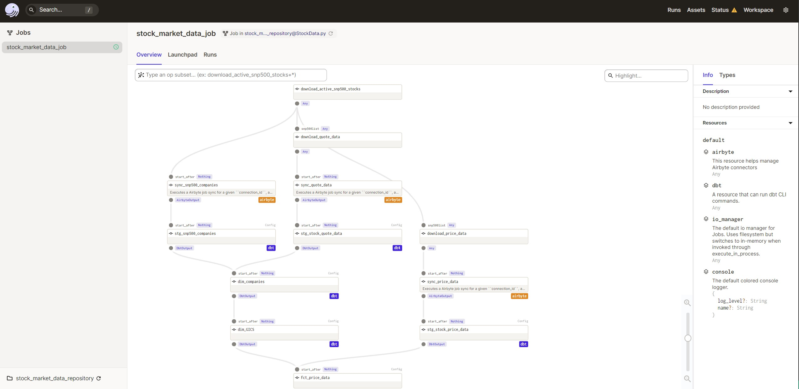
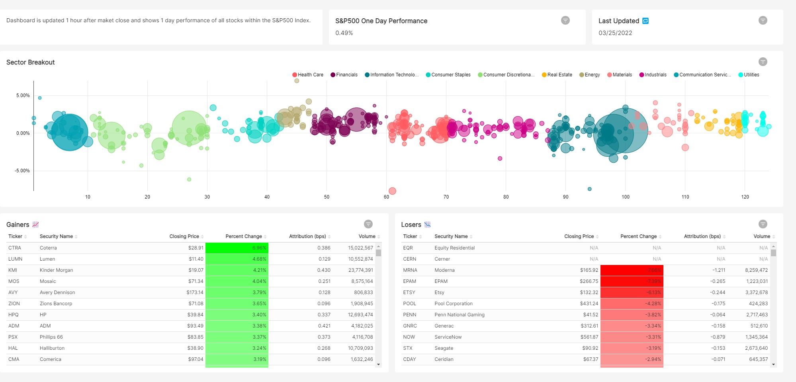

Stock Market Data Pipeline
Project Overview
Purpose of this project was to get more experience building an end to end data pipeline. I also used it as an opportunity to learn about different tooling in the modern data stack. For the scope of this project I wanted to limit the amount of stocks to only those in the S&P 500 index and I am only refreshing the data once a day after market close to get the most recent closing price.
Data Pipeline Diagram

1. Source, Extraction & Storage
Wikipedia
Wikipedia was used so I can retrieve an active list of the companies in the S&P 500 index. I used a python package called Beautiful Soup to scrape a table from this wiki page. This table also provided me additional information about each company such as GICS Sector and Sub-Industry. After the wiki table is converted into a pandas data frame I export the data frame as a CSV file to a bucket on Google Cloud Storage. My original plan was to keep the file on a local folder but I ran into issues with the Airbyte connection later on that made it difficult to ingest a local file into BigQuery. Once the file was in cloud storage the Airbyte connection process was seamless.
Side Note: While researching about exporting data frames to csv on google could storage I came across a method to load a data frame directly to a BigQuery table which seemed interesting. I didn’t choose this way because I wanted to learn about Airbyte but I would be interested in trying this method in the future.1
One road block that I ran into was some ticker symbols were not in the same format as how Yahoo Finance had them (e.g. BRK.B). This is why I had to replace the periods with a hyphen.
@op
def download_active_snp500_stocks():
wikiurl = "https://en.wikipedia.org/wiki/List_of_S%26P_500_companies"
response=requests.get(wikiurl)
#Parse data from html into a beautifulsoup object
soup = BeautifulSoup(response.text, 'html.parser')
snp500tbl = soup.find('table',{'class':"wikitable"},{'id':'constituents'})
#Convert wiki table into python data frame
snp500df = pd.read_html((str(snp500tbl)))
snp500df = pd.DataFrame(snp500df[0])
#replace . in symbols with - to match yfinance format
snp500list = snp500df['Symbol'].tolist()
snp500list = [ticker.replace('.','-') if '.' in ticker else ticker for ticker in snp500list ]
#export data frame as csv to google could storage
bucket.blob('data_sync/SnP500Companies.csv').upload_from_string(snp500df.to_csv(index=False,sep=';',header=True), 'text/csv')
#return list of tickers
return snp500listYahoo Finance
Yahoo Finance was used to retrieve stock price data for each company in the list. I used yfinance to retrieve YTD price information & pandas_datareader to get current quote information which provided me with additional data about the company like market cap. Originally I tried to use yfiance’s .info method to get market cap but was running into errors when using the method on a large list of stocks. Pandas Datareader was much faster and I may end up even refactoring the code to also retrieve the YTD price information with this package as well.
The two Dagster op’s download_price_data and download quote data do essentially the same thing the only difference is I am doing yf.download opposed to pdr.get_quote_yahoo to get different data. Originally I had both of these loops in the same op but with Dagster I can run them concurrently and since it takes awhile for the download_price_data to finish I can have other jobs start running upstream that depend on the quote data before download_price_data even finishes. After each op finishes it exports the data frame as a CSV to a bucket on Google Cloud Storage.
@op
def download_quote_data(snp500list):
quoteDataList = list()
for ticker in snp500list:
#Getting current yahoo quote data from pandas data reader
quoteData = pdr.get_quote_yahoo(ticker)
quoteData['AsOfDataTime'] = datetime.now()
quoteDataList.append(quoteData)
# combine all dataframes into a single dataframe
quoteDataDf = pd.concat(quoteDataList)
#adding name data frame index
quoteDataDf = quoteDataDf.rename_axis('ticker')
#Export dataframes as csv to google cloud storage
bucket.blob('data_sync/QuoteData.csv').upload_from_string(quoteDataDf.to_csv(index=True,sep=';',header=True), 'text/csv')2. Load
Loading the CSV files into BigQuery was a breeze… after countless hours trying to figure out how to configure Airbyte to load a local CSV file. I gave up on that method and instead I decided to store the CSV files store on Google Cloud Storage & once I made that change the set up process was very straight forward. I was really impressed the ease of creating a connection. I have experience with SSIS which is a legacy ETL tool & the Airbyte experience was refreshing. With the movement to ELT oppose to ETL, I believe it has made it easier for these new tools to specialize on developing these connections. SSIS was tasked to do too much, jack of trades & master of none. I have several times Visual Studio will crash & the package wont load or the package runs indefinitely.
The integration with Dagster was also very helpful. I was able to define my Airbyte resource and configure my connections so when the CSV files were upload it immediately triggered Airbyte to run and load the data into BigQuery.

3. Transform
After the data is loaded into some raw tables on BigQuery it’s time to start transforming the data. Many people may wonder what does “transforming data” all entail because that was one of the first questions I had when learning about ETL/ELT. Transforming data could be anything from changing data types, fixing date formats, in my case I had to adjust the ticker symbols to replace all periods with a hyphen so I can join on the field later on.
After we do some of these light transformations we can start modeling our data & adding some business logic to it. This is where we start creating fact & dimension tables.
Fact tables are tables whose records are immutable “facts”, such as service logs and measurement information. Records are progressively appended into the table in a streaming fashion or in large chunks. The records stay there until they’re removed because of cost or because they’ve lost their value. Records are otherwise never updated2.
Dimension tables: Hold reference data, such as lookup tables from an entity identifier to its properties Hold snapshot-like data in tables whose entire contents change in a single transaction3.
I created a dim_companies table which is suppose to represent additional information about the company that doesn’t frequently change (name, region, exchange, HQ location, GICS sector & industry). I also created a dim_GICS table which was very specific to the visualization I created for this project. I needed a way to have the GICS Sub-industry on the x axis so I had to convert them into numeric values. I was able to use the DENSE_RANK function to help with this. I have been trying to learn more about SQL window functions as well so this was a create way to practice.
The last table I created was the fct_price_data which has the all the YTD price data for each company and then I also joined on some additional data about the company from the dim_companies table. The one thing I am very proud of in this table is the use of a CTE and another windows function called LAG. I was able to calculate the 1 day performance of each stock for every record by partitioning the data by ticker and ordering it by date. The LAG function then allows me to look at the prior record so I can grab the previous market close price and use it to calculate the one day performance.
Since I also had the market cap of each company I was able to also calculate the attribution of each stock by taking the weighted return. Once again I had to use a windows function so I can take the market cap of each individual company divided by the total market cap of the S&P 500 index. Summing all the weighted returns of each stock was able to give me the 1 day performance for the S&P 500 index.
4. Visualize

For the visualization I took inspiration from finviz bubble chart which I believe does a great job of displaying how the market performed that day. The dashboard can lead to a lot of further questions about why specific sectors underperformed or outperformed. It also clearly shows any outliers which may leave you wondering what the story is behind that stock.
5. Conclusion
There are many things I would still like to add to this project.
- Ability to pick custom date ranges oppose to just 1 day performance
- Have data refreshed more frequently
- Account for days where market is closed
- More stocks
- Add additional graphs like a tree heat map
Overall, I am very happy with the outcome with this project. I was able to learn a lot about the modern data stack and it also really helped me improve upon my technical skills.